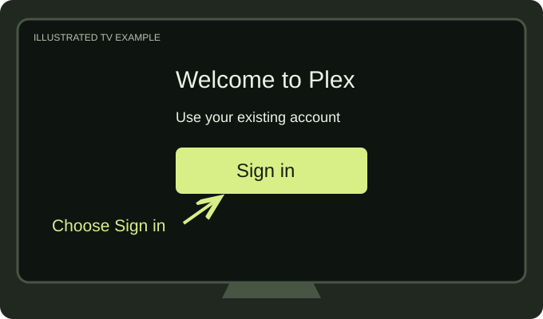
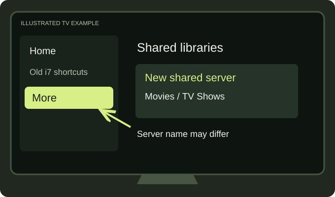
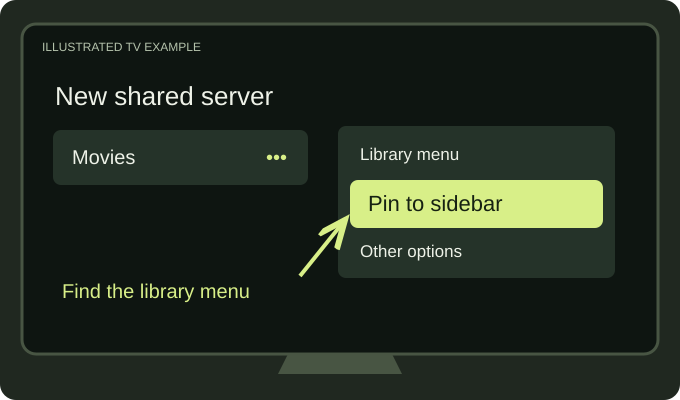
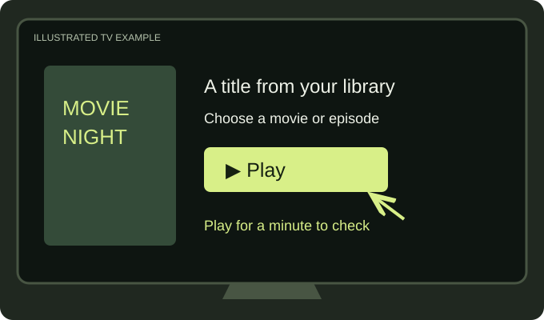

Open Plex & sign in
Use the Plex account you normally use to watch. If John sends a new library invitation, accept it with that same account, then reopen the app.
Same account you already use
YOUR PLEX SERVER HAS MOVED
We’ve moved from the old i7 server to Ubuntu. Open Plex, find the new shared libraries, and make them easy to reach again.
Use your own Plex account • Repeat on each device
The key change is where you browse. Your old i7 shortcuts may still appear. Find the libraries on the new server and pin those instead.
THE QUICK SETUP
Menu names vary by app.
Follow the closest option on your screen.
Following along on a TV? These are simplified illustrations, not screenshots. Menus, button names, and layout can differ on Roku, Fire TV, Apple TV, smart TVs, and other platforms or app versions. Follow the closest option on your screen.
Use the Plex account you normally use to watch. If John sends a new library invitation, accept it with that same account, then reopen the app.
Same account you already use
Open the navigation menu and look for More, your library list, or the server selector. Find the new server John shared with you. If you only see i7, ask John to confirm access and the new server’s display name.
Look beyond your old shortcuts
Use Edit in the sidebar, or open the menu beside each new library and choose Pin or Pin to sidebar, where available. Unpin old i7 entries to keep your menu tidy. Repeat on your TV, phone, tablet, and browser.
Unpinning only changes your menu
Browse directly inside a new shared library and play something for a minute. If it plays, you’re ready. If it doesn’t, use the help below and let John know what happened.
Then get comfortable
ON YOUR SCREEN
Open the side menu with your remote. Look for More or your libraries. Highlight a library and look for its menu or pin option.
Open the library or navigation view. Look for the new shared server and its libraries. Labels and layout depend on your app version.
Go to Plex Web ↗. Open More in the sidebar, then use the library’s menu to pin it.
NO STRESS
Try these quick checks. If you’re still stuck, John can help.
Use your usual family text or email. Include your device, the server name you see, and the exact error. A screenshot helps—hide your email and any sign-in codes first.
Check More or the full library list, then close and reopen Plex. Confirm you’re signed into your usual account. If the new server still isn’t there, ask John to check your library access.
Open the libraries shared by John directly. Plex’s own streaming content is a separate source. Look under More or your library list for the shared server.
Check your internet connection and restart the Plex app. Try Plex Web to see whether the problem is limited to one device. Tell John which device fails and the error you see.
Try a stronger Wi-Fi connection or Ethernet if available. If needed, try a lower playback quality in the player’s quality menu. If it continues, send John the title, device, and what you tried.
Start with your existing Plex account. Follow the library steps above. If you see a subscription prompt or a request to change connection security, check with John before changing settings or buying anything.
That depends on how the migration and your account’s watch-state settings were handled. Check a familiar title and let John know if your progress looks wrong.
Once the new libraries are pinned, they’ll be easier to find next time.
Open Plex ↗